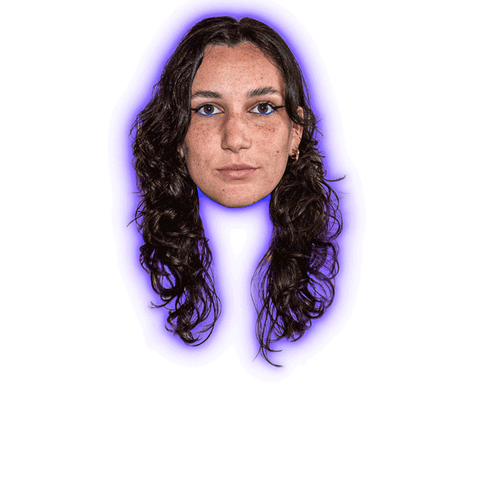

Diplômée d’un Master DSAA Graphisme, au lycée des Arènes de Toulouse, j’affectionne particulièrement les travaux autour de l’édition, de la typographie ainsi que de la photographie. Explorant l’objet éditorial sous toutes ses formes, je porte une grande importance quant aux choix typographiques et techniques, créant sens entre fond et forme. De plus, la photographie et la vidéo prennent une grande place dans ma pratique. Les médias imprimés sont ancrés dans mon champ d’application, et je tends à m’ouvrir davantage aux médias numériques.
DIPLÔMES .DSAA Graphisme(Diplôme Supérieur des Arts Appliqués)
. 2022-2024 · Lycée des Arènes, Toulouse
.DN MADe Graphisme(Diplôme National des Métiers d'Art et du Design), mention Image et Médiation
2019-2022 · Ensemble Scolaire Saint-Étienne, Cahors
.Baccalauréat ES
spécialité mathématiques,
option Arts Plastiques
2019 · Toulouse
EXPÉRIENCES .SOL AGENCY image de marque · édition · mise en pageréseaux sociaux · logo · packaging
2023 · 12 semaines · Bruxelles, Belgique
.STUDIO LOS PATOS direction artistique · design · branding · identité visuelle typographie : concept · études des formes · pistes évolutives risographie : conception d’un fanzine
2021 · 10 semaines · Avilés, Espagne
.STUDIO ASENSÓ image de marque · édition · packaging · espacemise en page . macro et micro typographie
2021 · 5 semaines · Sauvian, France
.AGENCE BETC découverte du métier de designer UX/UI
2020 · 2 semaines · Pantin, Magasins généraux, France
SAVOIR-FAIRE in designphotoshopillustratorpremiere prorisographiephotographie numérique
→ Retrouvez mon CV en PDF ←
 EMMA SUISSE
23 ans et toutes ses dents
emma.suisse01@gmail.com (+ 33) 6 38 34 89 33 @emmadmoizel